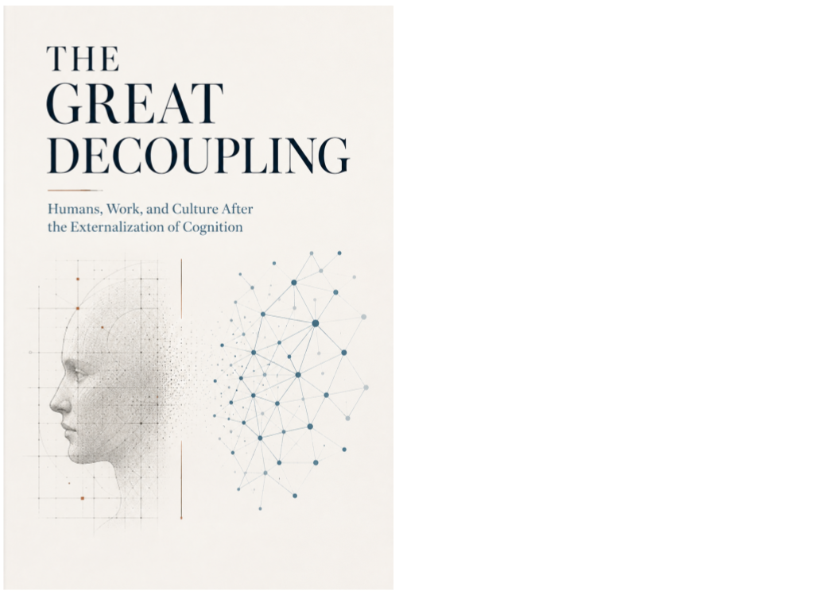

Society · Axiologic Research Editions
The Great Decoupling
Humans, Work, and Culture After the Externalization of Cognition
When thought becomes infrastructure, work is not the only thing that loses its old shape.
After cognition becomes cheap
For centuries, institutions treated skilled human thought as a scarce resource. The Great Decoupling asks what happens when parts of that resource become external, abundant and purchasable. The question is larger than jobs: work has also distributed status, time, discipline, belonging and a story about who deserves what.
The book follows the break through workplaces and into culture. It does not assume that automation must either emancipate humanity or make it obsolete. It instead asks which social contracts become brittle when competence is no longer a reliable claim to livelihood, authority or esteem.
The hidden contract beneath the job
What is being decoupled? Not simply employment from income, but human cognition from the institutions that used it to allocate recognition.
Why is culture in the title? Because a society cannot live on efficiency alone. The loss of familiar roles creates a vacuum that status competition, spectacle and new forms of dependence are eager to fill.
A machine can replace a task long before a culture knows what to do with the person.
A map before the rupture
This is for readers who want to think past both the productivity chart and the apocalypse headline. It treats AI as an institutional event: one that asks not merely what work remains, but what kind of society can remain humane when the answer changes.